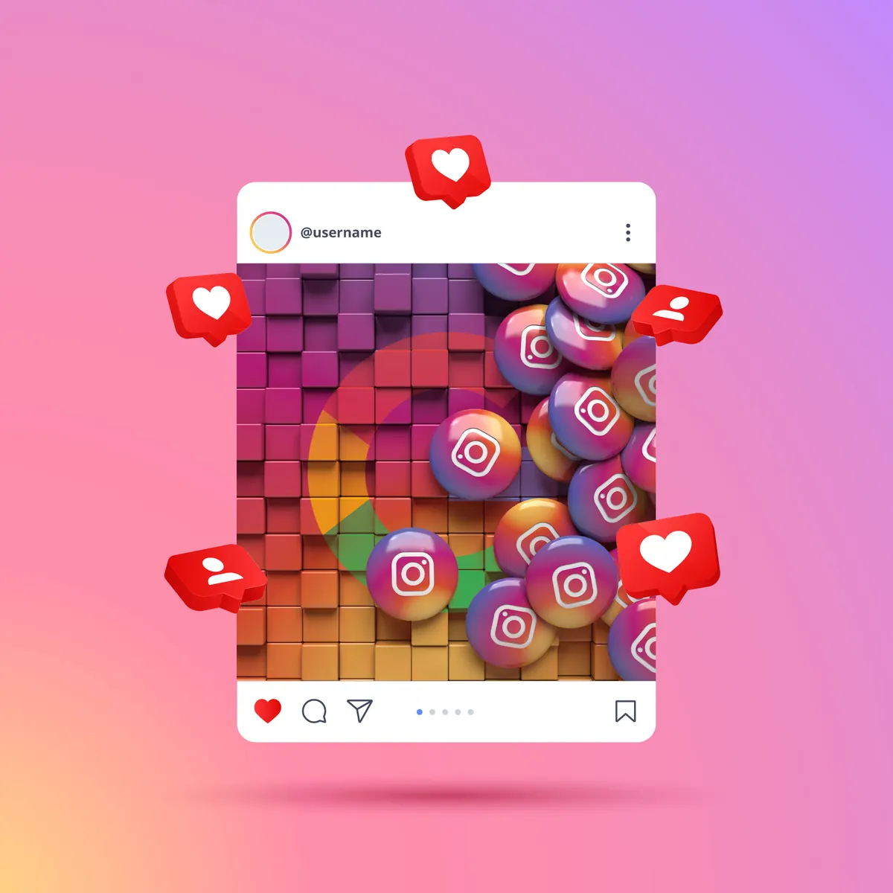

Insights de marketing.
Conteúdo educativo sobre performance, tráfego, SEO, branding e estratégia — de graça, para o crescimento do seu negócio.
Instagram + SEO: Respondemos as Perguntas Mais Frequentes e Montamos um Checklist Final
Encerrando a série sobre indexação do Instagram no Google, este post responde as perguntas mais frequentes e apresenta um checklist prático para otimizar seu perfil e ser encontrado pelos buscadores.
Ler artigo →Seus Reels no Google: O Guia Completo para Criar Conteúdo que o Algoritmo Ama (e Indexa!)
Para que Reels e posts do Instagram sejam encontrados pelo Google, é essencial usar texto na tela, legendas descritivas com palavras-chave e criar conteúdo de valor que gere engajamento real.
Ler artigo →
Otimização de Instagram para Google: 5 Estratégias de SEO Além das Hashtags
Com a indexação do Instagram pelo Google, aplicar técnicas de SEO no perfil — como otimizar a biografia, usar alt text e geotags — tornou-se essencial para ampliar a visibilidade orgânica da marca.
Ler artigo →A Indexação do Instagram pelo Google: Uma Nova Fronteira para a Visibilidade Online
O Google passou a indexar perfis e conteúdos do Instagram, ampliando o alcance orgânico das marcas além da plataforma e criando um novo canal de aquisição de clientes via mecanismos de busca.
Ler artigo →
Marketing de Afiliados: O Que É e Como Implementar
O marketing de afiliados permite que empresas ampliem vendas com baixo custo pagando comissões a parceiros que divulgam seus produtos, sendo uma estratégia mensurável e de risco reduzido para todos os setores.
Ler artigo →O Papel da Automação de Marketing na Personalização em Massa
A automação de marketing permite que empresas ofereçam experiências personalizadas em larga escala, usando dados e tecnologia para segmentar públicos, automatizar interações e aumentar conversão e fidelização.
Ler artigo →Marketing de Conteúdo: Como Criar um Calendário Editorial Eficaz
Um calendário editorial organiza a produção e publicação de conteúdo, garantindo consistência, alinhamento estratégico e colaboração eficiente entre equipes de marketing de conteúdo.
Ler artigo →Marketing Emocional: Conectando-se com o Cliente em um Nível Mais Profundo
O marketing emocional cria conexões genuínas entre marcas e consumidores ao explorar sentimentos como alegria, nostalgia e empatia. Veja casos de Dove, Nike, Coca-Cola e Airbnb e aprenda a implementar essa estratégia.
Ler artigo →Estratégias de Inbound Marketing para Geração de Leads Qualificados
O inbound moderno combina atração, conversão, nutrição e qualificação para entregar leads que realmente viram receita. Veja o roteiro completo, do primeiro clique ao lead pronto para o time de vendas.
Ler artigo →Marketing Omnichannel: Integrando Experiências Online e Offline
O marketing omnichannel costura pontos de contato digitais e físicos para criar jornadas contínuas. Veja como Magazine Luiza, Walmart, Starbucks e Sephora obtêm resultados mensuráveis com essa integração.
Ler artigo →Pesquisa de marketing: Conheça os 3 nívies de estudo
A pesquisa de marketing se organiza em três níveis progressivos — exploratória, descritiva e explicativa — formando uma escada analítica que orienta decisões estratégicas com base em evidências sólidas.
Ler artigo →
Tendências em Marketing Mobile: O Que Esperar nos Próximos Anos
O marketing mobile evolui rapidamente com inovações tecnológicas e mudanças no comportamento dos consumidores. Conheça as principais tendências emergentes, de vídeo social a gamificação, com exemplos reais de marcas líderes.
Ler artigo →Análise Preditiva em Marketing: Antecipando o Comportamento do Cliente
A análise preditiva usa dados históricos e algoritmos de machine learning para antecipar o comportamento do consumidor, permitindo personalização de ofertas, retenção de clientes e campanhas mais eficientes.
Ler artigo →
A Importância do Marketing de Comunidade no Engajamento do Cliente
O marketing de comunidade cria vínculos duradouros entre marcas e clientes ao cultivar espaços de diálogo e pertencimento baseados em valores compartilhados, gerando engajamento orgânico e fidelização.
Ler artigo →
Marketing Geolocalizado: Estratégias para Atrair Clientes Locais
O marketing geolocalizado usa a posição do consumidor para exibir anúncios e ofertas relevantes, unindo psicologia do comportamento e comunicação integrada para atrair clientes locais com mais eficiência.
Ler artigo →
Marketing B2B vs. B2C: Estratégias e Abordagens Diferentes
Marketing B2B e B2C diferem em ciclos de venda, tomadores de decisão, sazonalidade e canais: enquanto o B2B prioriza relacionamento e conteúdo técnico, o B2C foca em alcance em massa e decisões rápidas.
Ler artigo →Gamificação no Marketing: Engajando Clientes de Forma Interativa
A gamificação aplica elementos de jogos — pontos, rankings e desafios — em estratégias de marketing para aumentar engajamento, fidelizar clientes e construir comunidades em torno das marcas.
Ler artigo →Neuromarketing: Estudos de Caso e Aplicações Práticas
O neuromarketing une neurociência e marketing para revelar respostas inconscientes dos consumidores. Conheça ferramentas como eye tracking, EEG e fMRI, e veja como marcas líderes as aplicam na prática.
Ler artigo →Técnicas Avançadas de SEO: Além das Palavras-Chave
SEO vai muito além de palavras-chave: Core Web Vitals, SEO semântico, link building avançado, dados estruturados e otimização mobile são técnicas essenciais para dominar os resultados de busca do Google.
Ler artigo →
Marketing de Influência Nano e Micro: Vantagens e Desafios
Nano e micro influenciadores oferecem autenticidade, alto engajamento e custo acessível para marcas que buscam nichos específicos. Conheça as vantagens e os desafios de gerenciar essa estratégia de marketing de influência.
Ler artigo →
Privacidade de Dados no Marketing: Adaptando-se ao Fim dos Cookies de Terceiros
O fim dos cookies de terceiros e leis como LGPD e GDPR estão redesenhando o marketing digital. Descubra como focar em dados próprios, publicidade contextual e transparência para continuar alcançando seu público.
Ler artigo →
Utilizando Big Data para Impulsionar Suas Estratégias de Marketing
O Big Data revoluciona o marketing ao permitir personalização avançada, análise preditiva e segmentação precisa, transformando enormes volumes de dados em insights estratégicos que impulsionam crescimento empresarial.
Ler artigo →
Usando Storytelling para Fortalecer Sua Marca
O storytelling é uma estratégia poderosa para conectar marcas a seus públicos de forma emocional e autêntica, como demonstram exemplos da Nike, Coca-Cola e Dove, e a lição do caso Diletto sobre veracidade.
Ler artigo →A Importância da Experiência do Usuário (UX) no Marketing
A Experiência do Usuário (UX) tornou-se componente crítico no marketing moderno, influenciando diretamente a satisfação, retenção e lealdade do cliente, além de ser fator de diferenciação competitiva.
Ler artigo →
Como a Realidade Aumentada Está Transformando o Marketing de Varejo
A Realidade Aumentada revoluciona o varejo ao criar experiências interativas e personalizadas. Conheça como IKEA, Sephora, Pepsi, Amazon, Gucci, L'Oréal e Lego usam a RA para engajar clientes e impulsionar vendas.
Ler artigo →Tendências Emergentes em Marketing Digital para 2024
Em 2024, o marketing digital é marcado por IA e automação avançada, vídeo e conteúdo efêmero, omnichannel integrado, proteção de dados e sustentabilidade como tendências centrais para conectar marcas e consumidores.
Ler artigo →
O Que é Neuromarketing?
O neuromarketing combina neurociência e marketing para entender o comportamento do consumidor, usando tecnologias como fMRI, EEG e rastreamento ocular para revelar reações subconscientes a estímulos de marca e produto.
Ler artigo →Quanto Custa para Contratar um Profissional de Marketing?
Contratar marketing no Brasil pode variar de freelancers a agências e profissionais internos. Conheça os custos típicos de cada modalidade e saiba como escolher a opção mais adequada para o seu negócio crescer.
Ler artigo →A Difusão do Conhecimento na Democratização do Marketing
A democratização do marketing depende da difusão do conhecimento: ao tornar recursos educacionais acessíveis, pequenas empresas ganham as ferramentas necessárias para competir com grandes corporações.
Ler artigo →Quanto Devo Investir no Marketing da Minha Empresa?
Definir quanto investir em marketing é essencial para o crescimento do negócio. Saiba como usar percentuais de receita, CAC, LTV e diversificação de canais para criar um orçamento estratégico e eficiente.
Ler artigo →Os Desafios do Marketing Sustentável
O marketing sustentável é prioridade crescente para empresas, mas impõe desafios como autenticidade, rentabilidade, educação do consumidor e ceticismo em relação ao greenwashing. Saiba como superá-los com estratégias genuínas.
Ler artigo →Qual a Função do Marketing?
O marketing é função essencial em qualquer organização, responsável por identificar necessidades dos clientes, criar valor, comunicar ofertas, gerenciar a distribuição e construir relacionamentos duradouros para vantagem competitiva sustentável.
Ler artigo →5 Estratégias de Marketing Sensorial Bem Sucedidas
Apple, Starbucks, Dunkin' Donuts, Coca-Cola e Lush exemplificam como o marketing sensorial utiliza os cinco sentidos para criar experiências memoráveis, fortalecer a lealdade à marca e impulsionar vendas.
Ler artigo →Consultoria x assessoria x agência, qual a diferença?
Consultoria, assessoria e agência têm escopos distintos: consultores diagnosticam, assessores implementam de forma contínua e agências executam campanhas integradas. Entender cada modelo ajuda a escolher o serviço certo.
Ler artigo →
Abordagens Estratégicas para Email Marketing
O email marketing permanece entre as estratégias digitais de maior ROI; personalização por IA, conteúdo visual interativo, segurança de dados, storytelling e análise de métricas são as abordagens mais eficazes atualmente.
Ler artigo →7 vantagens do marketing automatizado para pequenas empresas
O marketing automatizado oferece às pequenas empresas eficiência operacional, mais leads, aumento de ROI, personalização de conteúdo e competitividade frente a grandes corporações, transformando a forma de crescer no mercado digital.
Ler artigo →O impacto do vídeo marketing nas vendas
O vídeo marketing impulsiona vendas ao aumentar a compreensão do produto, oferecer alto ROI, ampliar o alcance nas redes sociais e se adaptar às preferências dos consumidores modernos por dispositivos móveis.
Ler artigo →Qual a importância da segmentação de mercado no marketing da sua empresa?
A segmentação de mercado permite que empresas direcionem recursos com precisão, personalizem campanhas e aumentem a fidelidade do cliente, maximizando o retorno sobre o investimento em marketing.
Ler artigo →Como Otimizar Suas Campanhas de Anúncio
Otimizar campanhas no Google Ads exige segmentação de audiência, palavras-chave negativas, testes de tipos de campanha, criativos eficazes e lances inteligentes para maximizar o ROI publicitário.
Ler artigo →
5 motivos para criar o site da sua empresa hoje
Ter um site é uma necessidade estratégica para empresas modernas: amplia o mercado, aumenta a credibilidade, gera leads qualificados e acompanha o crescimento acelerado do comércio eletrônico.
Ler artigo →Cases de Sucesso de Marketing de Influência
Campanhas de marketing de influência de marcas como Chipotle, Häagen-Dazs, Tinder e Ralph Lauren mostram como estratégias criativas com influenciadores geram engajamento massivo, dobram vendas e definem tendências no marketing digital.
Ler artigo →Melhores Práticas de SEO para Empresas em 2024
Em 2024, o SEO exige atenção à intenção de pesquisa, velocidade técnica, vídeos, backlinks de qualidade, palavras-chave de cauda longa e otimização de imagens para melhorar o posicionamento nas buscas.
Ler artigo →Confira as Últimas Tendências em Marketing Digital
Em 2024, o marketing digital é marcado por autenticidade, realidade aumentada, microinfluenciadores, vídeos curtos e personalização por IA. Saiba como essas tendências estão moldando as estratégias de comunicação de marca.
Ler artigo →Matriz SWOT O que é e como pode favorecer a sua empresa
A Matriz SWOT analisa Forças, Fraquezas, Oportunidades e Ameaças para orientar decisões estratégicas, sendo essencial no marketing para criar vantagens competitivas e navegat em ambientes de mercado desafiadores.
Ler artigo →O que não fazer no seu perfil da sua empresa no Instagram
Conhecer os erros mais comuns no Instagram — desde biografia descuidada e excesso de promoção até falta de autenticidade — é fundamental para transformar o perfil da empresa em uma poderosa ferramenta de engajamento.
Ler artigo →LGPD na Obtenção de Leads
A LGPD estabelece regras rigorosas para coleta e tratamento de dados pessoais no Brasil, exigindo consentimento claro, boas práticas de segurança e conformidade legal para empresas que geram leads digitalmente.
Ler artigo →IA na Democratização do Marketing
A Inteligência Artificial está reformulando o marketing ao democratizar seu acesso, oferecendo ferramentas poderosas para empresas de todos os tamanhos com eficiência, inovação e precisão sem precedentes.
Ler artigo →
Por Que Divulgar Sua Marca nas Redes Sociais?
A presença nas redes sociais é uma necessidade estratégica para marcas que desejam alcançar público amplo, engajar clientes e obter retorno sobre investimento superior ao de canais tradicionais.
Ler artigo →Nenhum artigo encontrado.